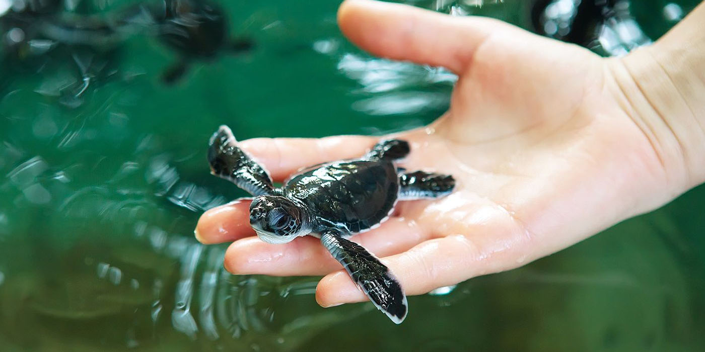

Rekawa Turtle Beach
Rekawa beach is not only one of the best places to spot sea turtles only in Sri Lanka but also in the world.
In Rekawa you can observe the ancient ritual of turtles coming ashore and laying eggs.
Rekawa beach is visited by five different species of sea turtles,
which lay their eggs in the sand every night throughout the year.
There are many places in Sri Lanka where you can check on endangered sea turtles, starting from Kalutara,
Bentota all the way up to the deep south there are dozens of sea turtle conservation farms.
Usually, these sea turtle conservation centres are visited by foreign tourists and are a part of most Sri Lanka road trips.
The tourists should pay for the entrance to these centres and it is the main income of the sea turtle conservation centres.
The sea turtles are restricted to big tanks in all these places and their movement is restricted.
But, unlike all these man-made sea turtle conservation centres, In Rekawa sea turtles are totally free,
with no human intervention with their activities. Maybe that' s the reason why so many sea turtles are coming to Rekawa beach for nesting.
Kosgoda Turtle Hatchery
At a distance of 9 km from Bentota Railway Station,
Sea Turtle Hatchery is a turtle conservation center located along the coast of the Indian Ocean at Kosgoda.
It is one of the must-visit places in Bentota during your Sri Lanka Tour.
The Kosgoda Sea Turtle Conservation Project was started by Dudley Perera in the year 1981.
The main aim of the project is to conserve the sea turtles and protect them from predators like birds, dogs, and crabs.
It is one of the 18 hatcheries in Sri Lanka devoted to the proper breeding of this endangered species.
Visitors can get to see up to five endangered species out of seven species of margin turtles in the world here.
The place is especially suitable for kids but provides to be a once in a lifetime experience for all.
The volunteers patrol the beach at night to make sure that any mother turtles have proper conditions to lay eggs.
They also carry the eggs back to the hatchery to make sure they hatch properly without any harm from predators and then release the baby sea turtles back into the ocean once properly hatched.
They also take care of sea turtles with disabilities and treat the ones who have become weak due to fishing activities.
Tourists will be guided throughout the process of protecting and proper hatching of the sea turtles while visiting the hatchery.
One can also visit the hatchery in the evening when the baby turtles are released into the sea as the risk for predators is minimum at this time and get the opportunity to release their baby sea turtle into the sea.
Turtle Bay Activity Center

Turtle Bay Hotel's location in the south of Sri Lanka features the largest population of turtles on the island.
Inspired and touched by the many species of turtle nesting there each year,
the hotel chose to honour these beautiful creatures by including them in the hotel's name.
Of the 7 sea turtle species in existence today, sadly all are considered endangered or critically endangered.
5 out of these 7 species, the green turtle, the hawksbill turtle,
the loggerhead turtle, the Oliver Ridley turtle and the leatherback turtle, visit Sri Lanka's southern coastal belt for nesting.
Of these, the leatherback turtle is the largest and rarest of turtles species in Sri Lankan waters.
In honour and respect of these beautiful creatures, our rooms at the hotel are named after them.
One of the most magical and curious things about these creatures is how female adult sea turtles always return to nest at the very beach they were born at.
This remarkable homecoming first starts when they reach about 25 years of age and continues until their breeding days are done.
As far as we know, this has been a sea turtle tradition since the beginning of time.
For this reason, it is imperative that we protect turtle nesting areas to ensure their continued survival.
Even under good conditions, it can happen that only 1 in 1000 hatchlings survives to breeding age.
Turtle Bay is committed to increasing these odds. Adult female green sea turtles return to the site they were born to lay their eggs at night.
Guided by the Turtle Conservation Project at Rekawa,
this beautiful spectacle can be observed by visitors on a beach located just half an hour from Turtle Bay.
For sightings of such wondrous happenings closer to home,
guests can sometimes catch glimpses of smaller species of female turtle laying their eggs directly at the beach in front of Turtle Bay Hotel.
The Rekawa Watch is a sea turtle conservation project, which aims to protect turtles'
nesting sites, which in turn is meant to ensure that eggs can hatch safely.
Visitors can join this important effort as “turtle watch” is possible any evening of the year.
Rekawa Centre volunteers lead groups to the beach between 8:30 p.m. and 11:30 p.m.
During this time participants can watch turtles lay their eggs and subsequently return to the sea.
Waiting for turtles to appear can take several hours so patience is required. During high season, from April to June,
anywhere between 5 and 15 turtles can appear each night.
During the low seasons from October to January only one or two turtles are sighted each night.
Though sightings are common most nights of the year, please be aware that there is no guarantee you'll see any.
Please also be aware that the centre has very strict rules about not disturbing the turtles.
Flash photography as well as white and yellow torches are not permitted during turtle watch.
Sea Turtle Farm & Hatchery Koggala
Koggala is rapidly becoming a luxury holiday destination and the list of things to do in Koggala,
Sri Lanka is ever growing. Popular day trips in the area include cruises along the serene Koggala Lake,
leisurely hours on the beach and even visits to the Koggala sea turtle hatchery and farm.
In truth, nothing beats seeing turtles swim freely in their natural habitat but since they are endangered,
it doesn't hurt to visit a sanctuary.
Turtle sanctuaries such as the one in Koggala are doing their part to save these mysterious sea creatures from extinction.
The staff at Koggala Sea Turtle farm and hatchery rescues injured or disabled sea turtles to care for them and buy turtle eggs from poachers to save the hatchlings.
Visitors to the farm can take part in releasing baby turtles into the sea. Injured turtles find a permanent home at the farm as they are unlikely to survive in the wild depths of the sea.
While their intentions seem to be genuine, certain practices such as letting visitors touch the turtles can be a little off-putting. On the plus side, the staff seems to be knowledgeable about turtles and you can learn a lot about this gentle species at the farm.